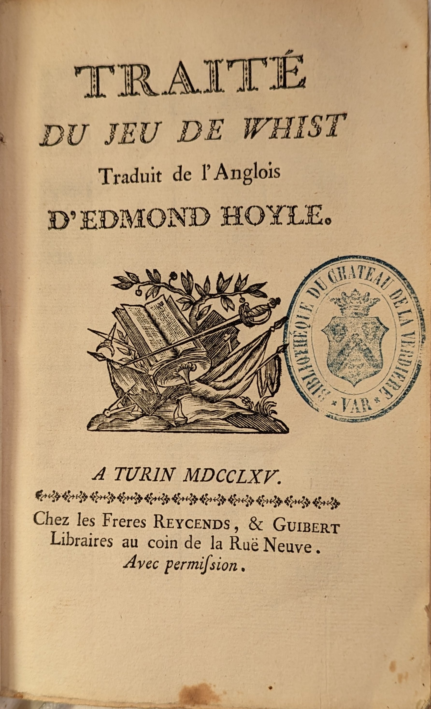

A Descriptive Bibliography of Edmond Hoyle
Copyright © 2014-26 by David Levy
(page updated 2026-03-21)User Guide
Reycends.Whist.Fr.1765
Traité du Jeu de Whist, Chez les Freres Reycends et al, 1765.
 |
Title: | TRAITÉ | DU JEU DE WHIST | Traduit de l'Anglois | D'EDMOND HOYLE. | [tailpiece] | A TURIN MDCCLXV. | [row of type orn] | Chez les Freres Reycends, & Guibert | Libraires au coin de la Ruë Neuve. | Avec permiſsion. |
| Collation: | 24o: a–g8 [$½ (−e3,g4) signed]; 56 leaves, pp. [1–2] 3–112 |
| Contents: | Signature (Page) Reference | Contents | Signature (Page) Reference | Running Titles |
| a1r (1) | title | |||
| a1v (2) | blank | |||
| a2r–a2v (3–4) | rules for whist | |||
| a3r–a4v (5–8) | ‘EXPLICATION | De quelques termes, ou mots techniques | employés dans ce Traité à l'uſage | des Commençans. | [...]’ | |||
| a5r–g7v (9–110) | ‘[headpiece] | TRAITÉ | DU JEU DE WHIST. | [...]’ | a2v–g7r (4–109) | ‘Traité du Jeu | de Whist.’ | |
| g7v (110) | ‘Traité du Jeu de Whist.’ | |||
| g8r–g8v (111–112) | ‘TABLE | Des principaux Articles du Traité | du Jeu de Whist. | [...] [imprimatur] [colophon]’ |
| Publisher: | Chez les Freres Reycends & Guibert |
| Printer: | François Antoine Mairesse |
| References: | Depaulis 99, Lensi 77 |
| Imprimatur: | ‘Die 24. Novembris 1764. | Imprimatur. | Fr. Joannes Dominicus Piſelli Vicarius Generalis | S. Officii Taurini. | V. Vigus LL. AA. P. | V. Se ne permette la ſtampa. | Galli per la Gran Cancelleria.’ |
| Colophon: | ‘A TURIN. | Chez François Antoine Mairesse Imprimeur | à l'enſeigne de S. Tereſe.’ |
| Copies Seen: | O [Jessel e.643]; NNPM [E3 092 D 079485]; NvLN [GV1277.H6914 1765]; Levy [1350]; Levy [2157] |
| Other Copies: | LEu [Anglo-French 3 1765 HOY]; FLB [CF005679182]; HAG [KW 665 M 26] (Google); IMB [ZUC.001-G-019]; Pa [8-S-16651]; Pa [8-S-16652]; TURu [X.IV.122]; Beauchene |